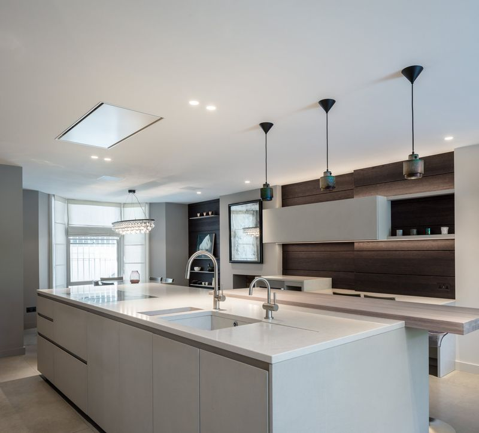
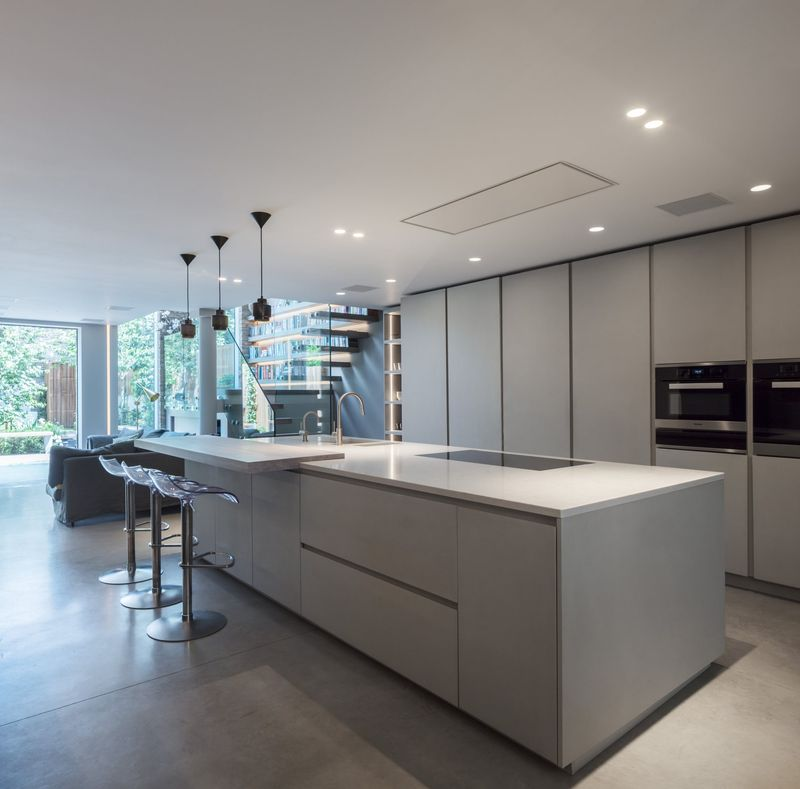
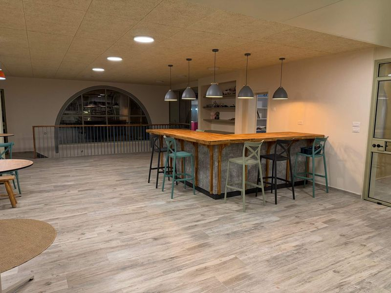
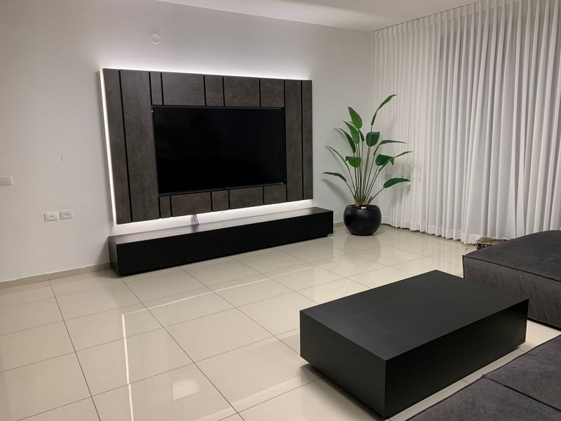
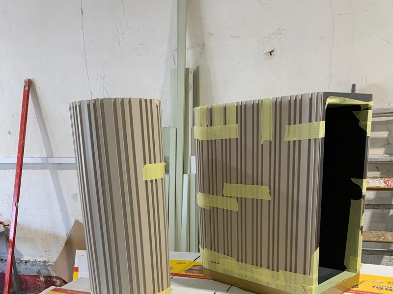

נסטינג
כל חלקי הארון מסודרים על הלוח ונחתכים במהלך אחד, במדויק ועם מעט פחת.

שלחו תמונה או שרטוט. אנחנו מתכננים, מייצרים, מרססים ומתקינים לפי המידות שלכם.
25 שנים במקצוע
תומאס הוכשר בפרויקטים תובעניים של מגורים ומסחר בבריטניה.
בהזמנה אישית
מטבחים וארונות בהזמנה אישית, לפי מידה.
מערכות פרזול Blum
מערכות מגירות ופרזול של Blum, המותקנות בארונות שלנו.
גימור בהתזה
צובעים אצלנו. מההתחלה ועד הסוף.
חיפה
נגרייה משלנו, מהתכנון ועד ההתקנה.
לפי מידה, בנגרייה שלנו.

מטבחים וארונות בהזמנה אישית, לפי מידה. הלוחות נחתכים ומקבלים קנטים בנגרייה שלנו, ומותקנות בהם מערכות מגירות ופרזול של Blum.

ארונות מהרצפה עד התקרה עם נישה פתוחה לטלוויזיה, וארון גבוה לחדר כביסה.

מזנון צף עם מגדל מדפים מואר.

קיר מדפי ספרים מוארים לצד מדרגות עם מעקה זכוכית.

רהיטים בנויים ופתרונות אחסון, בתכנון לפי החלל שלכם ובהתקנה שלנו.

משטח עץ ארוך של שולחן.

דלפק בר עם משטח עץ וכיסאות בר.

שולחנות עבודה וארונות אחסון נמוכים למשרדים עם קירות זכוכית.
מבחר עבודות גמורות, שיוצרו בנגרייה שלנו והותקנו על ידינו. הקישו על תמונה כדי לראות אותה בגדול.
קיר ארונות ארון בגדיםמזנון טלוויזיה
ארון בגדיםמזנון טלוויזיה
קיר טלוויזיהמשרדחיתוך CNC
מכונת ה-CNC שלנו לחיתוך לוחות (Nesting), Busellato Jet Optima RT21A, חותכת, מכרסמת וקודחת לוחות ישר מהשרטוט – לרהיטים שלנו, וגם כשירות לנגרים, למעצבים ולקבלנים.
כל חלקי הארון מסודרים על הלוח ונחתכים במהלך אחד, במדויק ועם מעט פחת.
קשתות, פתחים, חריצים וחלקים בצורות מיוחדות – לוחות פסים ולוחות מחורצים, חיפויי קיר ודלתות מחורצות.
קידוחים לצירים, לנושאי מדפים ולפרזול, באותו מהלך – כך שהכול מתיישב במקום.
שלחו קובץ DXF או רשימת חיתוך. גם סקיצה או תמונה עם מידות מספיקה – אנחנו מכינים את השרטוט.
שלחו לנו רשימת חיתוך או שרטוטים וקבלו חלקים חתוכים, קדוחים ומוכנים להרכבה. הדבקת קנטים וצביעה בהתזה נעשות באותה נגרייה, אם צריך. איסוף בחיפה, או משלוח בחיפה ובצפון.
הכול מיוצר כאן, בנגרייה שלנו ברחוב אריה שנקר בחיפה – תכנון, חיתוך, הרכבה וגימור בהתזה – ומותקן על ידינו.





כל התמונות כאן שלנו, מהנגרייה שלנו. בלי סטוק, בלי AI, בלי פילטרים.
חותכת, מכרסמת וקודחת את לוחות הארונות ישר מהשרטוט.
מסור פאנל, מקצועת עובי, מקצועה, מסור סרט ושולחן פרזה לעיבוד מדויק וחוזר של עץ מלא ולוחות.
מדביקה קנטים ללוחות הארונות, כאן בנגרייה.
מערכות מגירות ופרזול של Blum, המותקנות בארונות שלנו.
מערכת טורבינה HVLP בת שישה שלבים לגימור בהתזה.
תא צביעה סגור עם זרימת אוויר מסוננת מהתקרה אל הרצפה.
TL נגרות היא נגרייה לארונות ודלתות עץ מלא בהזמנה אישית בחיפה, בניהולו של תומאס, עם 25 שנה במקצוע.
אנחנו מייצרים ארונות ומטבחים בהזמנה אישית, רהיטים בנויים ודלתות עץ מלא, ועושים גם עבודות מסחריות. הכול נעשה בנגרייה שלנו – תכנון, חיתוך, הרכבה וגימור בהתזה – ואנחנו מובילים ומתקינים בעצמנו, בחיפה ובצפון.
25 שנים במקצוע · אנגלית/רוסית
תומאס הוכשר בפרויקטים תובעניים של מגורים ומסחר בבריטניה.
053-382-2875
ספרו לנו על הפרויקט – החדר, מה שאתם מדמיינים, תקציב משוער או תאריך יעד – ונחזור אליכם עם רעיונות והצעדים הבאים.
שלחו תמונה בוואטסאפוואטסאפ ייפתח עם ההודעה הזו. צרפו שם תמונה ושלחו.